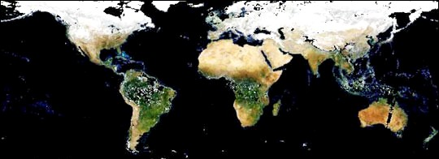
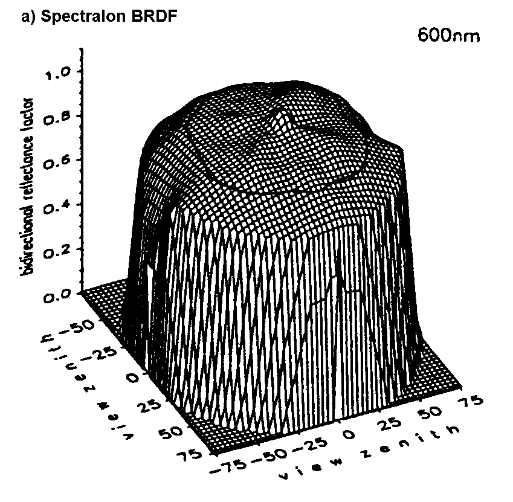
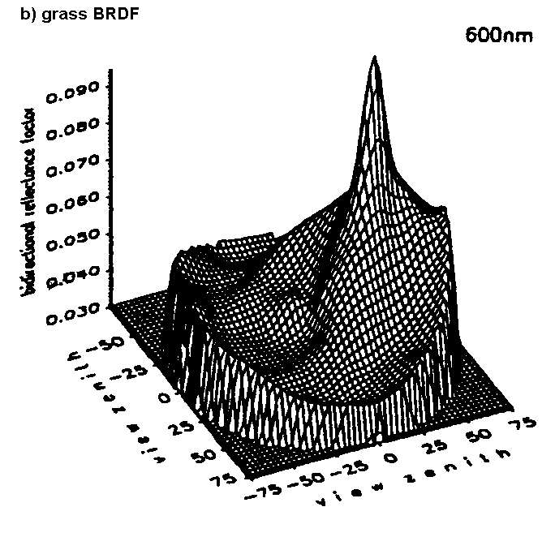
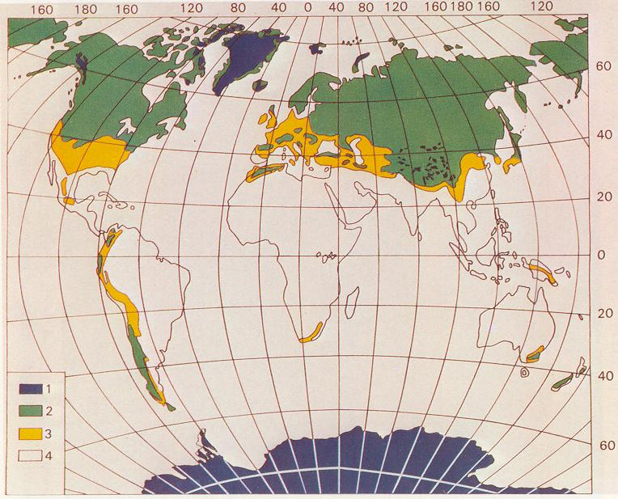
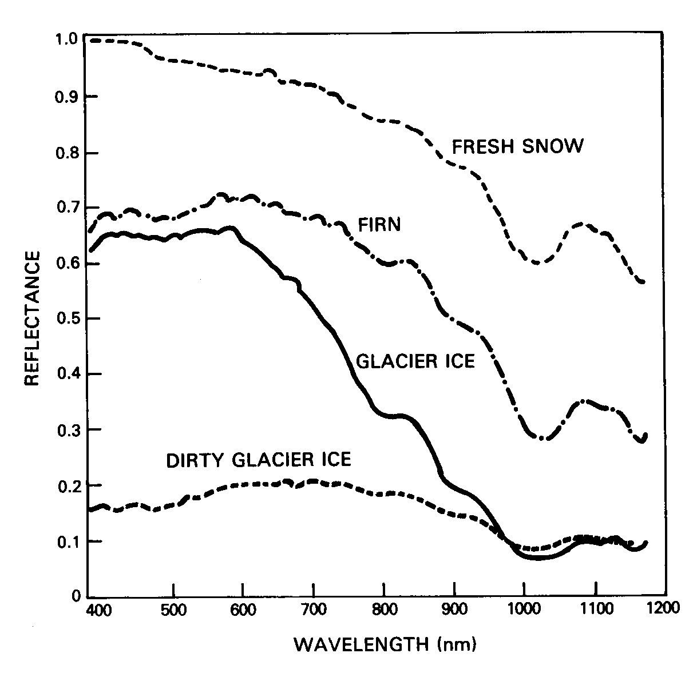
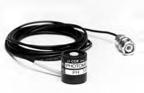
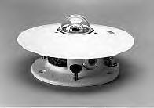
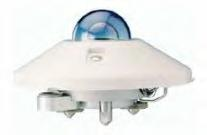
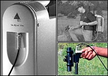

Retrieval of surface albedo from space

Global albedo, December 2001 through February 2002, from the Multi-angle Imaging SpectroRadiometer (MISR); image by NASA/GSFC/LaRC/JPL.John Maurer
This paper was written as part of a graduate course ("Remote Sensing Field Methods") co-taught by Profs. Alexander F. H. Goetz, Konrad Steffen, and Carol Wessman at the University of Colorado at Boulder.
December, 2002
Introduction • Remote Sensing Methods • Field Methods • Future Directions • Conclusions • References
Location, topography, and the exchange of radiant energy between the sun and Earth ultimately determine weather. Absorbed, reflected, and emitted radiation are the driving forces causing temperature fluxes, ocean currents, wind, and evaporation which in turn becomes precipitation. And since climate is the study of weather at timescales ranging from a few weeks to decades and beyond, an understanding of the Earth's radiation budget is critical to climate research. The transfer of energy between the sun, Earth, and space remain in constant equilibrium as dictated by thermodynamics (i.e. energy cannot be created or destroyed). Energy coming into this system is supplied by the sun, 98% of which is in the wavelength region of ~0.3-3.0 µm. Solar irradiation, furthermore, is only partially absorbed by the Earth while the rest is immediately reflected back into the sky. The fraction of solar irradiation reflected back into space is termed the "albedo" and is highly variable depending on the surface type and intervening atmosphere (e.g. clouds). Earth maintains equilibrium with the absorbed irradiation by emitting longwave radiation back into space. The Earth's "radiation budget" is thus calculated as the absorbed shortwave radiation minus the outgoing longwave radiation. Obviously, for this calculation to be made, one critical parameter is the surface albedo.
Albedo is defined as the fraction of incident radiation that is reflected by a surface. While reflectance is defined as this same fraction for a single incidence angle, albedo is the directional integration of reflectance over all sun-view geometries. Albedo is therefore dependent on the bidirectional reflectance distribution function (BRDF). If the BRDF is not taken into consideration, however, and the surface is assumed to reflect isotropically (i.e. equally at all angles) this is referred to as the "diffuse albedo" or sometimes the "hemispherical albedo". This assumption can of course lead to large errors, however, for surfaces with high amounts of BRDF anisotropy. Below are BRDF plots at 600 nm for both Spectralon (left) and grass (right) (Sandmeier et al., 1998 (64)). A perfectly lambertian surface would have a BRDF plot that was cylindrical in shape with a flat top. As can be discerned below, the albedo for Spectralon could be well approximated by a diffuse albedo calculation. Large anisotropy in the grass BRDF, however, shows that a lambertian assumption would produce a poor approximation depending on the viewing geometry:


In this paper, I will investigate the methods used to retrieve surface albedo measurements from satellite remote sensing data. Along the way, several remote sensing field methods will be discussed which have been used both to create and validate the satellite retrieval methods. While the influence of clouds on the Earth's radiation budget is extremely significant, too, it is not within the scope of this paper to investigate this topic. Clouds have a high albedo, causing much of the solar irradiation to be reflected back to space before it can ever reach the Earth's surface. Furthermore, longwave radiation which is radiated from the Earth's surface can also be scattered off of clouds and re-radiated to the Earth, causing the so-called "greenhouse effect." As has been discerned from the Earth Radiation Budget Experiment (ERBE), about 30% of incoming solar radiation is reflected back to space by the Earth, of which 26% is due to Rayleigh scattering and reflection of clouds and only 4% is due to reflection from the surface (Harrison et al., 1993). Nevertheless, small percentages translate to large numbers in terms of energy. Increases or decreases in surface albedo can therefore significantly impact regional and global climate.
I have primarily focused on the surface albedo of snow- and ice-covered regions for the purposes of this paper, though a few sources on soil and vegetation albedo were also consulted for comparison. Owing to the high albedo of snow (~0.8) and the fact that a large amount of the Earth's land surface is covered by snow, these regions provide a large cooling effect on the global climate. Below is a map of permanent (blue), relatively stable (green), and seasonal (yellow) global snow cover (Hall et al., 1985):

Snow albedo is highly variable, ranging from as high as 0.9 for freshly fallen snow, to about 0.4 for melting snow, and as low as 0.2 for dirty snow. This makes it important to actually measure the albedo of snow-covered areas rather than apply single-value climatological averages over broad regions and time periods. Again, small errors in albedo can translate into large errors in energy estimates. Below is a graph of reflectance spectra for different snow and ice surfaces (Hall et al., 1985):

It is also an important consideration that as the albedo of snow drops as it experiences melt, there is more radiation being absorbed by the snow pack. This creates a positive feedback, causing further melt and thus further decreases in albedo. Given the large influence of snow covered regions on the Earth's climate, therefore, and its positive feedback response to melting, knowledge of the surface albedo over these regions is critical both to calculations of the global radiation balance and to monitoring the stability of large "permanent" snow-covered regions. Should Greenland melt in a warmer climate, for example, it would lead to a sea level rise of approximately 7 meters (Williams et al., 1993), which would be disastrous to many coastal cities. Ice core analysis has suggested that Greenland did melt during the last interglacial (~120,000 years BP). The maximum sea level rise potential for the Antarctic ice sheet, on the other hand, would be 73 meters (Williams et al., 1993)!
Due to its repetitive global coverage, remote sensing provides the most promise for estimating regional and global albedo, and there are already many algorithms used operationally for the retrieval of surface albedo from remote sensing data. There are many difficulties that must be taken into consideration when measuring surface albedo from space, however, and many challenges yet to be fully addressed. These issues will be discussed in this section.
In order to avoid the difficulties inherent to satellite albedo measurements and the many potential errors that accommodate them, however, a simplified non-remote-sensing approach has often been applied for many Global Circulation Models (GCMs) (Liang et al., 2000). In this approach, a global land cover map is used to distinguish the major surface types on the Earth, and a single average albedo value is assigned to each of these surfaces. For example, a single prescribed albedo value of 0.8 might be assigned to all pixels within snow-covered regions. Given the highly variable albedo of snow, however, this estimate could be off by as much as 75%. Even if the estimate was only off by 10%, that could still translate to a very large error in the estimation of absorbed solar energy. For climate modeling purposes, scientists have identified the need for albedo values with accuracies to within ±0.5 (Henderson-Sellers et al., 1983) to ±0.2 (Sellers, 1993). Despite the difficulties associated with retrieving albedo from space, the most current remote sensing algorithms are beginning to meet these accuracy requirements (Stroeve et al., 2002; Liang et al., 2003). As remote sensing albedo retrievals have improved in the last 5-10 years and algorithms have been developed for application over a broad range of surface types, their use in GCMs have increased.
Remote sensing instruments do not directly measure surface albedo. As a result, albedo must be inferred through a series of manipulations to the raw remote sensing data. First of all, a method for determining which pixels are cloud-free within the data is necessary so that they are not used in the measurements of surface albedo. Secondly, remote sensing data are originally stored as digital numbers which must be calibrated in order to represent geophysical units of radiance, or W·m-2·sr-1. Next, satellite instruments measure radiance at the top of the atmosphere (TOA). Since we are concerned with albedo at the Earth's surface, a correction must be made to account for the effects of the intervening atmosphere. The data can then be divided by the Planck irradiance curve to derive the surface reflectance. The difficulty at this point is that most satellite instruments only take measurements at one or a few viewing angles. Recall, however, that albedo is an integration of reflectance over all view angles. Therefore, a computation must be made to estimate albedo from reflectance, which requires an understanding of the BRDF of the surface being measured. Lastly, satellites normally measure the Earth's radiation in a number of separate narrowband channels, but albedo must represent the total broadband region of solar radiation of approximately 0.3-3.0 µm. A conversion is necessary, therefore, to extrapolate the narrowband albedo values inferred from remote sensing instruments to broadband values.
Below is a diagram of the various steps described above which are necessary to convert a raw remote sensing signal into a measurement of surface albedo:
1. apply cloud-mask
cloud-free pixels (DN) 2. calibration DN radiance (W·m-2·sr-1) 3. atmospheric corrections radiance reflectance 4. anisotropic correction reflectance narrowband albedo 5. narrowband-to-broadband (NTB) conversion narrowband albedo broadband albedo Cloud masks have been applied with great success except over snow and ice surfaces, where the reflectance and radiant temperatures are hard to distinguish between. Thin cirrus clouds, furthermore, may often go undetected though their influence on the local radiation budget can be significant. For these reasons, cloud masks are an area needing further development in order to enhance performance of satellite-based surface albedo retrievals over snow and ice regions.
Calibration of remote sensing instruments is another area requiring special attention. For older sensors such as the AVHRR and other operational sensors which may not have been originally designed with the stringent accuracy requirements of the scientific research community, calibration can be a significant area of research in and of itself. It is estimated, for example, that the AVHRR drifts between 5-10% each year from the calibration coefficients determined just prior to launch. When doing albedo studies, therefore, it is necessary to study the literature for the most accurate and up-to-date coefficients for the instrument you are acquiring data from.
Because satellites are outside of the Earth's atmosphere, the radiation which they receive are different from the radiance just above the Earth's surface. This difference is due to the intervening atmosphere. In order to relate the radiance measured by the sensor to that at the surface, therefore, it is necessary to model the various scattering and absorption effects caused by air molecules (Rayleigh scattering), aerosols (Mie scattering), atmospheric gases such as water vapor and ozone, and the ionosphere (though the ionosphere has little effect on visible and infrared radiation). Models apply radiative transfer equations to estimate the above effects on radiation given inputs such as atmospheric profiles of pressure, temperature and humidity at the time of measurement. These inputs can be provided to the model by readily available climatological averages for the location being studied, though results can be much improved by actual field measurements of atmospheric profiles using radiosonde data or data from satellite-flown sounding instruments such as TOVS. Field measurements are superior owing to the water vapor content of the atmosphere, which is usually highly variable, both spatially and temporally (Rees, 1999).
Some of the atmospheric models that were used in the literature that I read included LOWTRAN-7, 6S, STREAMER, and MODTRAN. Having modeled the atmosphere allows one to adjust the instrument's radiance response accordingly and then divide by a Planck solar irradiance curve to derive reflectance. As with any modeled scenario, uncertainties will exist. The effect of atmospheric aerosols, for example, are especially problematic for atmospheric models to predict.
The next step in the surface albedo retrieval method is to correct for anisotropic reflectance in the BRDF of the surface being measured. Though we have derived reflectance in the above step using an atmospheric correction, this result only gives us the fraction of reflected incident radiation at a single viewing geometry; or, more precisely, at the very few viewing geometries incorporated by the instrument's instantaneous field of view. As has been shown in a previous figure for grass, the reflectance of a surface over its entire bidirectional reflectance distribution function may vary significantly with differing viewing geometries and wavelengths. In order to correct for this anisotropy, therefore, a correction factor must be applied to the reflectance measured at a particular sun-view geometry in order to infer the spectral albedo. This correction factor, f, can be calculated from the anisotropic reflection function, which normalizes the BRDF, R, relative to the spectral albedo, as (Steffen, 1987):
f(ø°, ø', Ø) = pi · R(ø°, ø', Ø) / as(ø°)
where ø° is solar zenith angle, ø' is reflectance zenith angle, and Ø is the reflectance azimuth angle. f values greater than one indicate a reflectance that exceeds the albedo at the solar-view geometry specified, while f values less than one indicate a reflectance that is less than that of the albedo. The difference in f value from 1.0 can thus be applied as a correction factor to the reflectance measured by a remote sensing instrument to infer the spectral albedo of the surface in question.
In order to derive an anisotropic reflection function for the surface being measured, knowledge of its BRDF is of course a prerequisite. Since the BRDF of the surface cannot be measured directly by most satellites, however, models have been developed to predict it. As with atmospheric correction models, BRDF models are based on radiative transfer theory and require certain inputs in order to make accurate predictions. These inputs include particle size and shape of the surface in question, which can be measured directly through stereological analysis or provided as estimates, and optical depth of the atmosphere (Stroeve et al., 1997). BRDF models that were described in the literature reviewed are (1) the discrete-ordinate radiative transfer model, Disort (Nolin et al., 1997; Stroeve et al., 1997; Klein et al., 2002; Stroeve et al., 2002), and (2) the reciprocal RossThick-LiSparse ("Ross-Li") kernel-based BRDF model (Lucht et al., 2000, IEEE), which is also the basis for (3) the Algorithm for MODIS Bidirectional Reflectance Anisotropy of the Land Surface (AMBRALS) model (Lucht et al., 2000, RSE). Given the ease with which BRDF can now be measured on the surface with the Automated Spectro-Goniometer (ASG), further development and validation of these models will surely arise in the coming years.
Up to this point, we have now derived a spectral, or "narrowband," surface albedo. Since most satellites measure radiation in discrete, narrow, and non-contiguous wavelength regions, or "bands", however, a conversion is necessary to convert spectral albedo to the full, or "broadband," albedo. Broadband albedo represents the fraction of total solar radiation that is reflected by the surface. Solar radiation is received at the Earth in the shortwave wavelength region of 0.3-5.0 µm, 98% of which is in the range of ~0.3-2.5 µm. The methods used to derive this conversion equation have ranged from field methods to modeling approaches. The field methods will be further discussed in the following section of this paper. It is important to note here, however, that in situ methods produce conversion coefficients that are inherently limited to the particular surface type, atmospheric conditions, and solar geometries under consideration. Therefore, it is impractical to attempt to produce globally applicable conversion equations through ground sampling. Modeling approaches have the advantage of easily simulating many different surface, atmosphere, and viewing conditions which can be incorporated into analyses that produce accurate results. Though further ground validation is necessary to confirm their results, Shunlin Liang et al. (2000 and 2003) have produced equations through a modeling approach for a series of eight different satellite sensors that have yielded accuracies of less than 0.02 when compared to ground measurements for many different surface types.
In sum, there are many steps necessary for the retrieval of surface albedo from satellite-borne remote sensing data, each with its own set of considerations and uncertainties. Studies range in the level of detail put into each of these different steps. Some have ignored BRDF altogether, for example, and assumed a Lambertian surface. Many have applied atmospheric models using climatological atmospheric profiles rather than field measurements. Estimates of grain size and particle shape are mostly used as input to BRDF models rather than stereological analysis of field samples. All of these simplifications can lead to larger errors. In general, however, accuracies of ±0.02 to ±0.05 that are necessary for GCMs have been nearly approached within the last couple of years (Lucht et al., 2000; Stroeve, et al., 2001; Klein et al., 2002; Stroeve et al., 2002), and there is hope that these accuracies can be met.
3.1. Equipment
3.2. Deriving NTB Conversion Coefficients
3.3. Field Validation MethodsIn this section I will describe the field methods used for deriving narrowband-to-broadband (NTB) conversion coefficients and for validating remote sensing albedo measurements. Consideration will be given in each case to the potential sources of error. First of all, however, I will briefly describe some of the instruments which were used in the field studies which I reviewed. This will provide the necessary background for describing their applications later on. Unfortunately, it seemed common practice in the literature to simply mention the use of a "pyranometer" or a "field spectrometer" without any mention of the model used or the characteristics of the instruments. Where possible I have cited the papers that have used the instruments below in each case.
There are different kinds of instruments that can be used in the field to measure radiation for the purposes of studying albedo. Instruments which can be used to measure shortwave radiation are called pyranometers. Two kinds of pyranometers can be used: photodiodes and thermopiles. Photodiodes are point sensors which measure a limited wavelength region but are relatively cheap, while thermopiles are designed to cover a more broad wavelength region.
The photodiode pyranometer employed in a few of the albedo studies which I reviewed (Stroeve et al., 2001; Stroeve et al., 2002) is the LI-COR 200SZ. This sensor employs a highly stable blue enhanced silicon photovoltaic detector to measure hemispherical radiation over the wavelength region of ~300-1100 nm. Though it does not have a flat response over the wavelength region measured (as illustrated here) and though it does not cover the entire region of solar irradiation (~300-3000 nm), radiation measurements made with the LI-COR 200SZ under clear sky conditions compare favorably with first class thermopile type pyranometers. Stroeve et al., though, found a positive bias of between 4-11 % of the LI-COR radiation measurements compared to thermopile pyranometer measurements over various locations in Greenland (Stroeve et al., 2001; Stroeve et al., 2002). The low cost of this sensor compared to thermopile pyranometers makes it desirable in many applications, however, despite this inaccuracy. The sensor weighs only 28 grams and is 2.38 cm in diameter by 2.54 cm in height.

LI-COR 200 SZOne of the thermopile pyranometers often used for albedo studies (Stroeve et al., 1997; Stroeve et al., 2001; Klein et al., 2002) is the Eppley Laboratory, Inc. Precision Spectral Pyranometer (PSP), a World Meteorological Organization First Class Radiometer designed specifically for measurement of broadband hemispherical solar and sky radiation. The sensor is a wire-wound thermopile coated with a special black lacquer for non-wavelength selective absorption which produces an extremely flat spectral response (only ±0.5% non-linearity). Sensitive to radiation between 285-2800 nm, an Infrasil II quartz hemisphere can be employed to surround the thermopile and filter out all radiation above ~2500 nm. A white enamel guard disk (shield) can be fastened to the PSP (pictured below) to prevent radiation from reflecting off of the surrounding surface and entering into the sensor. The instrument's body includes a bubble level for ascertaining that it is situated parallel with the surface. The PSP weighs 3.2 kg (7 lbs.) and is 14.6 cm in diameter by 9.5 cm in height.

Eppley PSP (with shield)Another model of thermopile pyranometer is also employed in many albedo studies (Greuell et al., 2002; Liang et al., 2003): the Kipp & Zonen CM21. Fully compliant with the ISO-9060 Secondary Standard pyranometer performance category (the highest ISO performance criteria), the CM21 is designed for high precision measurement of broadband hemispherical solar and sky radiation. As with the Eppley PSP, the sensor is a wire-wound thermopile coated with a special black carbon based non-organic lacquer for a flat spectral absorption response (<±0.25% non-linearity) over the entire spectral range of the instrument (305-2800 nm). As with the Eppley PSP, a quartz hemisphere was employed to filter out all radiation above ~2500 nm and a leveling bubble on the body of the instrument can be used to ensure surface parallel orientation. The CM21 weighs 850 grams and is 15.0 cm in diameter by 9.5 cm in height. Kipp & Zonen also manufactures albedometer: the Kipp & Zonen CM14. This instrument is basically a coincident pair of pyranometers whose responses are automatically divided to output albedo directly. This was used in a few of the experiments that I reviewed (Knap et al., 1999; Lucht et al., 2000; Greuell et al, 2002).

Kipp & Zonen CM21Spectral albedo measurements are now often measured for albedo studies using the following equipment (Liang et al., 2003): (1) the Analytical Spectral Devices, Inc. FieldSpec® Pro FR ("Full Range") and associated FieldSpec® Pro RS3 software running on a laptop computer, and (2) a small (~10 cm2) Labsphere, Inc. Spectralon® white standard panel. The ASD FR operates in the spectral range of 350-2500 nm via three detectors: one 512 element silicon (Si) photodiode array in the 350-1000 nm range and two separate, thermoelectrically cooled, graded index indium gallium arsenide (InGaAs) photodiodes-one covering the 1000-1800 nm range and the other covering 1800-2500 nm. The ASD FR is thus composed of an array portion (350-1000 nm) and a scanning portion (1000-2500 nm). ASD reports a spectral resolution of 3 nm at 700 nm and 10 nm at both 1400 and 2100 nm for this device. The ASD FR takes input from a fiber optic cable composed of 57 fibers (19 per detector) with a 25° field of view and a scanning time of 100 milliseconds. This fiber bundle can be attached to a pistol grip to allow it to be easily held and pointed by a person taking field measurements. The entire ASD FR and laptop are strapped to the person making measurements such that the ASD FR is placed in a backpack on the person and the laptop is placed on a deck in front of them. The ASD FR weighs 7.2 kg. The Spectralon panel is a highly lambertian thermoplastic providing nearly perfect reflectance (0.949-0.995) over the 350-2500 nm range. This panel thus provides a measurement of the spectral solar irradiance against which the ASD FR can automatically record reflectance spectra (i.e. radiance ÷ irradiance). Other studies employed similar Geophysical Research Corporation (GER) portable field spectrometers (Haefliger et al., 1993; Stroeve et al., 1997) rather than the ASD FR.

ASD FieldSpec Pro FR3.2. Deriving NTB Conversion Coefficients
Many studies have used field methods to derive narrowband-to-broadband (NTB) conversion coefficients. The basic methodology is to take spectral reflectance measurements with a field spectrometer at the same time and location that broadband albedo is measured with a set of pyranometers. Broadband albedo can be derived from reflectance spectra by integrating over the reflectance curve for the wavelength region measured by the pyranometer. This integration also requires convolution with a spectral irradiance curve, which also needs to be collected at the time of measurements. A spectral irradiance curve can be measured by pointing the spectrometer at nadir over a nearly Lambertian surface such as that of Spectralon. Here is the equation for deriving broadband albedo from a reflectance spectrum, where w represents wavelength:
INTEGRAL (reflectance * irradiance) · dw
_____________________________________INTEGRAL (irradiance) · dw
The goal, however, is not to calculate broadband albedo from the reflectance spectra. The goal is to calculate narrowband, or "spectral", albedo at wavelength intervals that correspond to bands measured by the satellite instrument being considered. For example, AVHRR has two bands in the shortwave radiation region which can be used for retrieving surface albedos: band 1 (0.58-0.68 µm) and band 2 (0.73-1.10 µm). Narrowband albedos can thus be calculated from the spectrometer reflectance spectra for these two wavelength regions using the equation above. These values are then compared to the broadband albedo measured by the set of pyranometers for the same time and location. Linear regressions incorporating results from both bands are then used to derive coefficients to convert from narrowband to broadband albedo. These coefficients can then be used to convert satellite-derived narrowband albedo values to broadband albedo measurements as described previously in this paper.
There are a few important considerations concerning the above described method. First of all, pyranometers measure actual albedo in the sense that they have a near-180° field of view and sense radiation over the entire bidirectional reflectance distribution function of the surface. Most field studies employ the spectrometer measurements, however, at a single view angle (nadir). Therefore, it is not entirely accurate to compute broadband albedo from a single reflectance spectrum since it does not take into account the BRDF (Liang et al., 2003). To be most accurate, a goniometer device such as the ASG should be used for spectral albedo computations. Another consideration is that the wide field of view of the pyranometer is integrating radiance over a wide surface area while the very narrow field of view of spectrometers such as the ASD FR (25°) is only sensing the radiance over a relatively small surface area. Spatial inhomogeneities may therefore cause the two kinds of devices to sense different albedos. One study that I read took this into account by taking multiple spectrometer readings in the vicinity of the pyranometers for an average spectral output (Liang et al., 2003). Lastly, because separate bands measured by a remote sensing instrument are closely related to each other in the radiation that they receive from any given surface, linear regression models which are used to compute NTB coefficients may not be the best approach. Because of the multicollinearity of the system, principle components analysis may be a more accurate approach (Streove et al., 2002).
Methods used to validate satellite-derived albedo measurements are accomplished with a pair of pyranometers, one measuring the incoming radiation and the other measuring the radiation reflected from the surface. One pyranometer is thus set to face the sky while the other is pointed down at the surface. The ratio of the output of these two instruments thus provides the broadband albedo at a given location. Another form of doing this is to use an albedometer, which is a coincident pair of pyranometers which does the ratioing itself and outputs albedo values directly. Either way, broadband albedo measurements are made at various locations on the ground in order to compute a representative average for the site under study. When comparing this average with satellite-derived albedo measurements, an important consideration is the pixel size of the data. Enough ground measurements should be made to get a representative albedo measurement for the spatial area that this pixel size corresponds to on the ground. Ground measurements need to be made as close to the time of the satellite overpass as possible, too, so that atmospheric conditions and solar geometry are as similar as possible.
There are many possible sources of error when doing field validation experiments. First of all, determining exactly where on the ground the pixels you want to compare against exist can be a tricky task. Georegistration methods of remote sensing data can have large amounts of error, especially in areas of high topographic relief. IKONOS imagery, for example, can be off by as much as 15-90+ meters (Space Imaging, 2002). Many studies composited a cluster of 4-8 pixels as a result of this geolocation uncertainty. Another important consideration is that of spatial inhomogeneity of the surface being studied. Large variations in albedo across the surface area being measured can make it extremely challenging to produce a representative average through ground sampling that can confidently be compared to what the satellite sees: click here for an illustration of this adapted from Lucht et al., 2000, RES. This was cited in all of the literature that I reviewed as a major problem and one of the biggest contributing factors to differences between satellite-derived and measured broadband albedos. During the summer melt period in Greenland, for example, the albedos of small patches of melt water, ice, and snow will cause extreme amounts of variability over the surface. Also, as has been previously mentioned, studies which employ photodiodes rather than thermopiles will get a bias in their measured albedo values due to the limited wavelength region sensed by those kinds of instruments. Lastly, it is important that the pyranometers are maintained at a surface level position throughout the course of measurements, that the sensing part of the pyranometers is not obstructed by frost or other objects, and that measurements are made only during cloud-free conditions. The presence of clouds will cause the level of irradiance to fluctuate and thus contaminate results.
Owing to the problem of spatial inhomogeneity, a few studies have tried to incorporate different techniques for capturing representative averages over large spatial areas. Greuell et al. successfully used a helicopter to derive NTB coefficients over many surface types on Iceland and Greenland with accuracies of ~0.01. Song et al., on the other hand, employed an unpiloted aerial vehicle (UAV) carrying a coincident pair of pyranometers to collect field measurements of broadband albedo which were compared with AVHRR-derived values within a root-mean-square error of 0.02 over grassland. I think it would be interesting to deploy UAVs for a similar comparison over Greenland. Liang et al. have derived globally applicable NTB coefficients which have been validated to < 0.02 accuracy over soil and vegetation but still need validation over snow and ice.
Next, there has been one study investigating the retrieval of surface albedo by taking advantage of MISR's angular information (MISR collects data at nine simultaneous look angles) (Stroeve et al., 2002). This approach utilizes the angular information to directly measure the BRDF of the surface without reliance on a model. Since the BRDF can be directly calculated from the data, furthermore, there is no need to convert the signal from DN to reflectance, cutting out a huge amount of the uncertainties involved with instrument calibration and atmospheric correction. Field validation showed that the angular method for inferring albedo was similarly as inaccurate as the spectral method described in this paper, however (~0.06). Further validation was necessary owing to the large uncertainties introduced by the use of photodiode pyranometers.
Lastly, it is important for input into Global Circulation Models that future albedo retrieval methods report not only the broadband albedo but also the direct and diffuse components of both the visible and near-infrared regions that go into making up the broadband albedo.
In conclusion, there are many steps necessary for computing a remote sensing signal from a raw digital number to a surface broadband albedo measurement. Owing to the fact that satellites measure radiance at the top of the atmosphere at only one or a few view angles and in discontinuous narrow wavelength regions, the main difficulties in inferring surface albedo lie in modeling the effects of the atmosphere, modeling the BRDF of the surface, and in deriving globally applicable narrowband-to-broadband conversion coefficients. The uncertainty at each of these levels still remains relatively high and there is much work left to be done. Areas of development still necessary for improvement of albedo retrievals are cloud-masks over snow and ice surfaces, characterizing the effect of aerosols on radiative transfer through the atmosphere, further validation and adjustments to BRDF models based on input from the ASG, and further validation over a greater variety of surface types of the NTB equations developed by Liang et al. Lastly, it is still difficult to validate satellite measurements with ground measurements because of spatial inhomogeneity.
Because of all of these layers of complexities, it is rather amazing that results have been as good as they are thus far. Various studies in the last ten years have had mean accuracies of between ±0.06 to ±0.1 when compared to ground measurements.
Top of Page • Introduction • Remote Sensing Methods • Field Methods • Future Directions • Conclusions • References
© 2002,
{kind=link}
{kind=link}
{kind=link}
{kind=link}